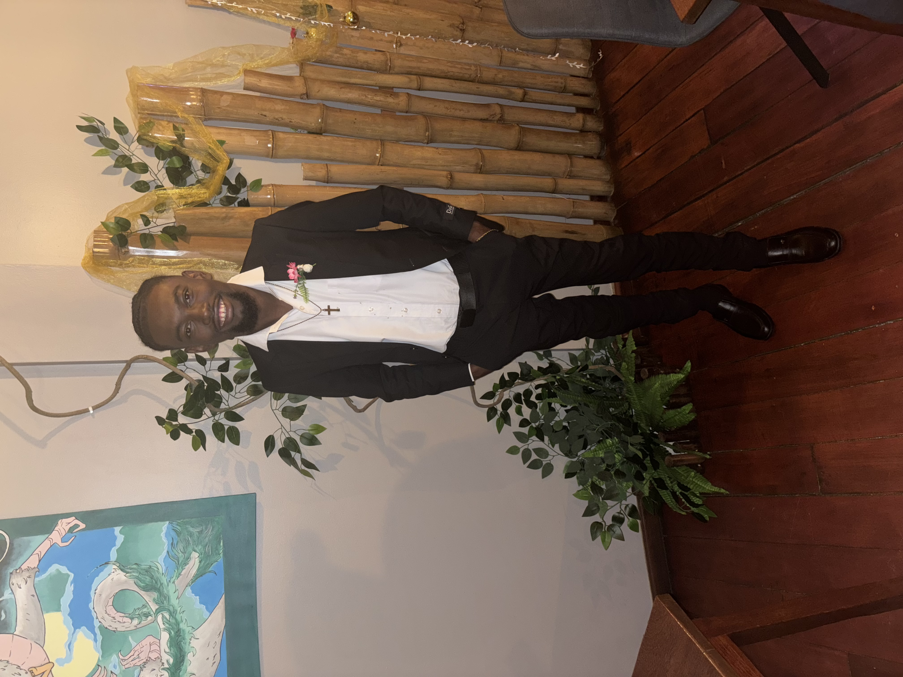

Senior System Engineer & Junior Software Developer
📍 Paramaribo, Suriname | 🇸🇷
Jaar ervaring
Projecten
Gecertificeerd
Ik ben een Senior System Engineer en Junior Software Developer gevestigd in Paramaribo, Suriname. Ik specialiseer in het opzetten, uitbreiden, overnemen en onderhouden van netwerken.
Bij ET-IT Consultancy werk ik als Senior System Engineer sinds oktober 2025. Daarnaast heb ik mijn eigen bedrijf Jinet Solutions als bijbaan naast mijn studie.
Ik heb ervaring met firewalls, Windows servers, Hypervisors, VPN-oplossingen, camera (NVR) installaties, hardware/software reparaties en website/applicatie ontwikkeling.
Een selectie van mijn recente projecten en expertise
Opzetten en onderhouden van netwerken, firewalls, Windows servers, Hypervisors en VPN-oplossingen voor bedrijven.
Ontwikkeling van websites en applicaties. Stage bij Datasur als Junior Software Developer.
Mijn eigen bedrijf voor IT-diensten: hardware/software reparaties, camera installaties en technische support.
Technologieën en tools waar ik mee werk
CCNA, Firewalls, VPN, TCP/IP
Windows Server, Hypervisors, NVR
HTML, CSS, JavaScript, React
Office, AutoCAD, Photoshop